About me
I'm back in my hometown of Seattle, developing ridiculously fast and accurate numerical algorithms for Rhinoceros 3D's CAD kernel at Robert McNeel & Associates.
Previously I was a Research Scientist at Coreform (immersed isogeometric analysis) and a Courant Instructor at NYU with Leslie Greengard and Mike O'Neil, affiliated with the Flatiron Institute's Center for Computational Mathematics. I earned my PhD in computer science at Maryland, advised by Masha Cameron and Ramani Duraiswami.
Software
- butterflythe butterfly factorization, in C99 with Python bindings
- jmmthe jet marching method for the eikonal equation (C99/Python)
- python-fluxfast BEM for thermal & illumination modeling in planetary science
- python-embreethin Embree 3 wrapper with easy numpy interop
- olimordered line integral method for the eikonal equation, in C++
- nufft1D nonuniform FFT via the fast multipole method (C++)
Open-source work at McNeel is on GitHub; proprietary work at Coreform.
Papers
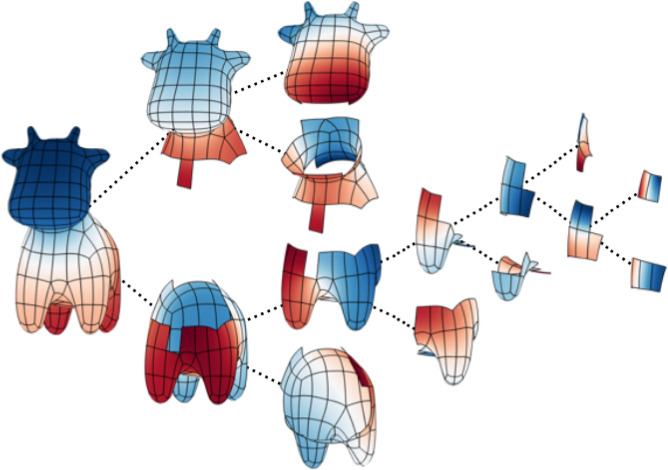
A butterfly-accelerated manifold harmonic transform
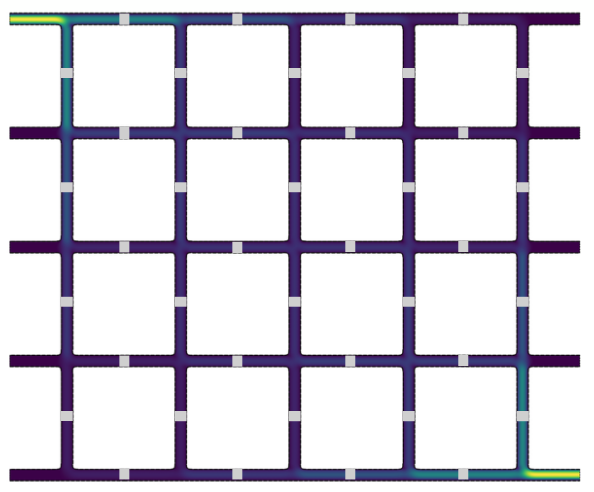
Scattering theory for Stokes flow in complex branched structures
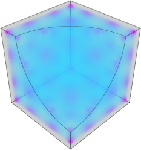
Fast construction of efficient cut cell quadratures
A lightweight, geometrically flexible fast algorithm for the evaluation of layer and volume potentials
Journal of Computational Physics · 2025
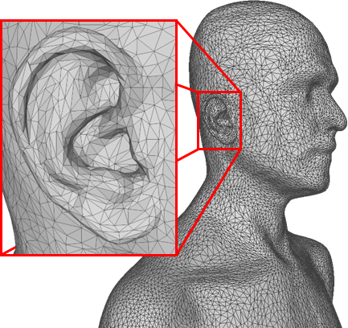
Computing acoustic onsets via an eikonal solver
IEEE Workshop on Applications of Signal Processing to Audio and Acoustics · 2023
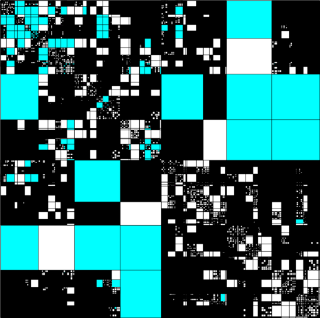
Fast hierarchical low-rank view factor matrices for thermal irradiance on planetary surfaces
Journal of Computational Physics: X · 2023
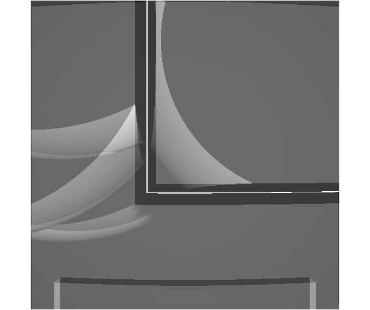
Numerical geometric acoustics: an eikonal-based approach for modeling sound propagation in 3D environments
Journal of Computational Physics · 2023
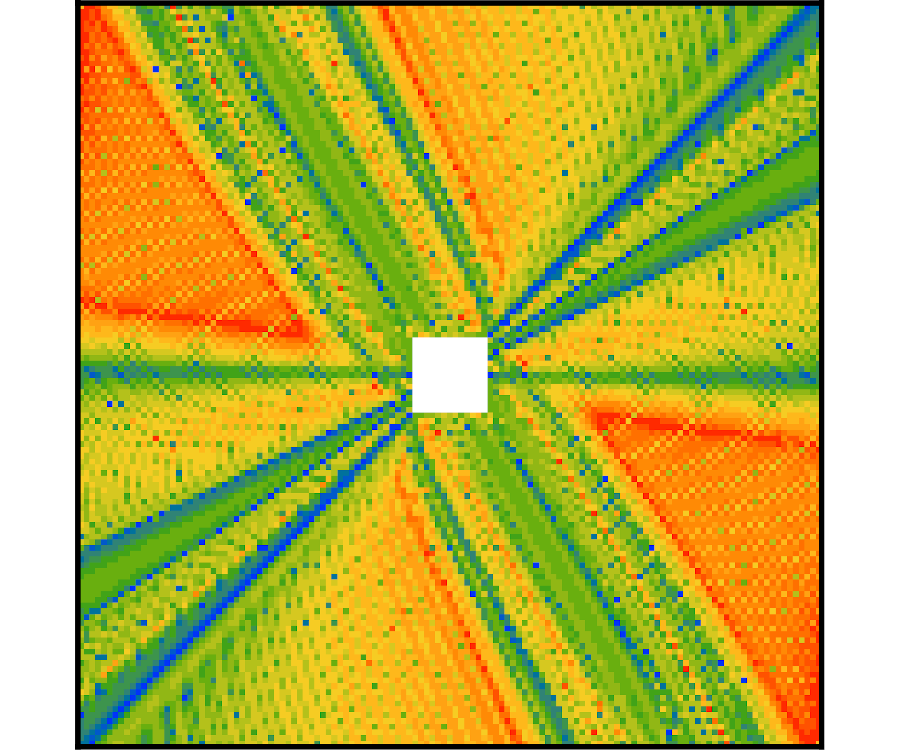
Jet marching methods for solving the eikonal equation
Journal on Scientific Computing · SIAM · 2021
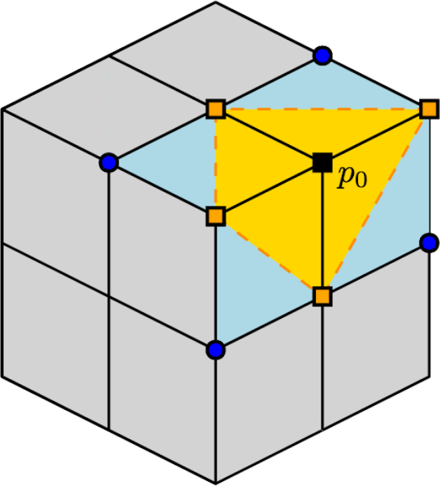
Ordered line integral methods for solving the eikonal equation
Journal of Scientific Computing · Springer · 2019
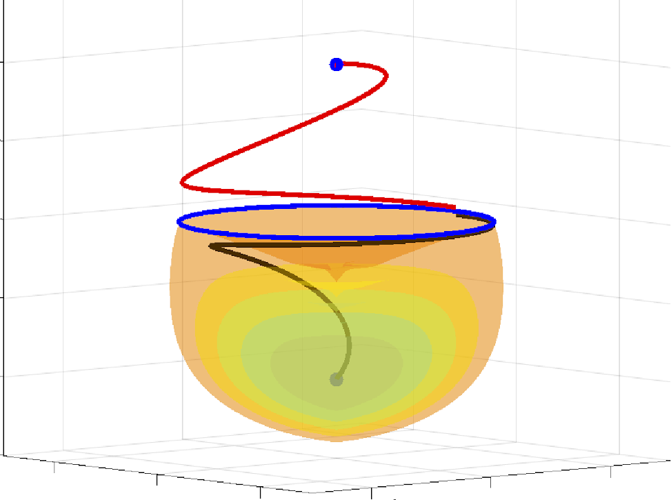
Computing the quasipotential for nongradient SDEs in 3D
Journal of Computational Physics · Elsevier · 2019
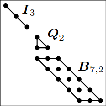
Fast and stable Pascal matrix algorithms
Technical report · 2017
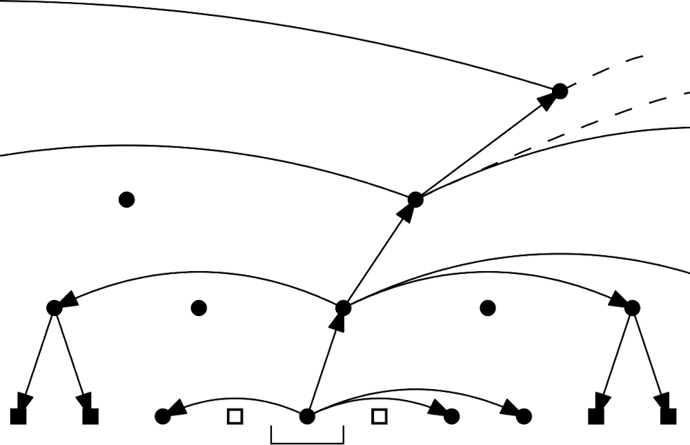
Fast interpolation of bandlimited functions
ICASSP · IEEE · 2017
Talks
- 2025Fast cut cell quadratures and robust contouring algorithms · Seminar in Applied Mathematics, University of Washington
- Fast cut cell quadratures and robust contouring algorithms · Seminar, Geometric Computing Lab, NYU (D. Panozzo)
- Fast construction of efficient cut cell quadratures · SIAM Annual Meeting
- 2024Butterfly-accelerated Gaussian random fields on manifolds · ALGORITMY 2024
- Jet marching on unstructured meshes: algorithms and applications · ALGORITMY 2024
- 2023Jet marching methods for numerical geometric acoustics · ICIAM 2023
- Butterfly-accelerated multiple scattering in two dimensions · ICOSAHOM 2023
- Recent progress on the butterfly factorization · University of Maryland
- Butterfly-accelerated manifold harmonic transforms · SIAM CSE 2023
- Butterfly-accelerated manifold harmonic transforms · Western Washington University · job talk
- 2022Butterfly-accelerated manifold harmonic transforms · Numerical Analysis Day, NYU
- Fast algorithm for terrain irradiance using compressed view factor matrices · CMG 2022
- Jet marching methods for numerical geometric acoustics · Courant Instructor Day, NYU
- 2021Jet marching methods for numerical geometric acoustics · NASC Seminar, NYU
- Numerical geometric acoustics · Dissertation defense, University of Maryland
- Fast algorithms and precomputation in room acoustics and planetary science · Flatiron Institute · job talk
- Jet marching methods for numerical geometric acoustics · Joint Mathematics Meetings
- 2020Jet marching methods for solving the eikonal equation · Sayas Numerics Day
Teaching
- NYU · Spring 2023Numerical Analysis
- NYU · Fall 2022Linear and Nonlinear Optimization
- NYU · Spring 2022Numerical Analysis
- NYU · Fall 2021Calculus 3